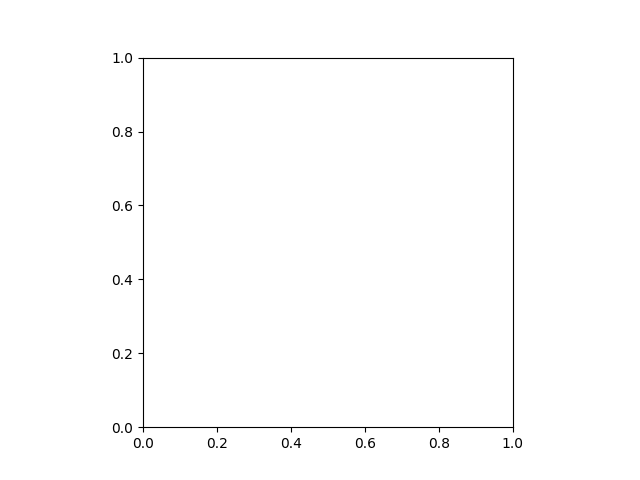
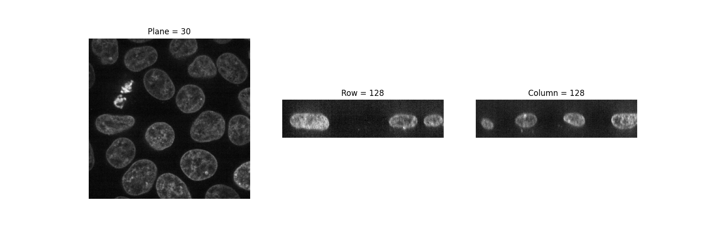
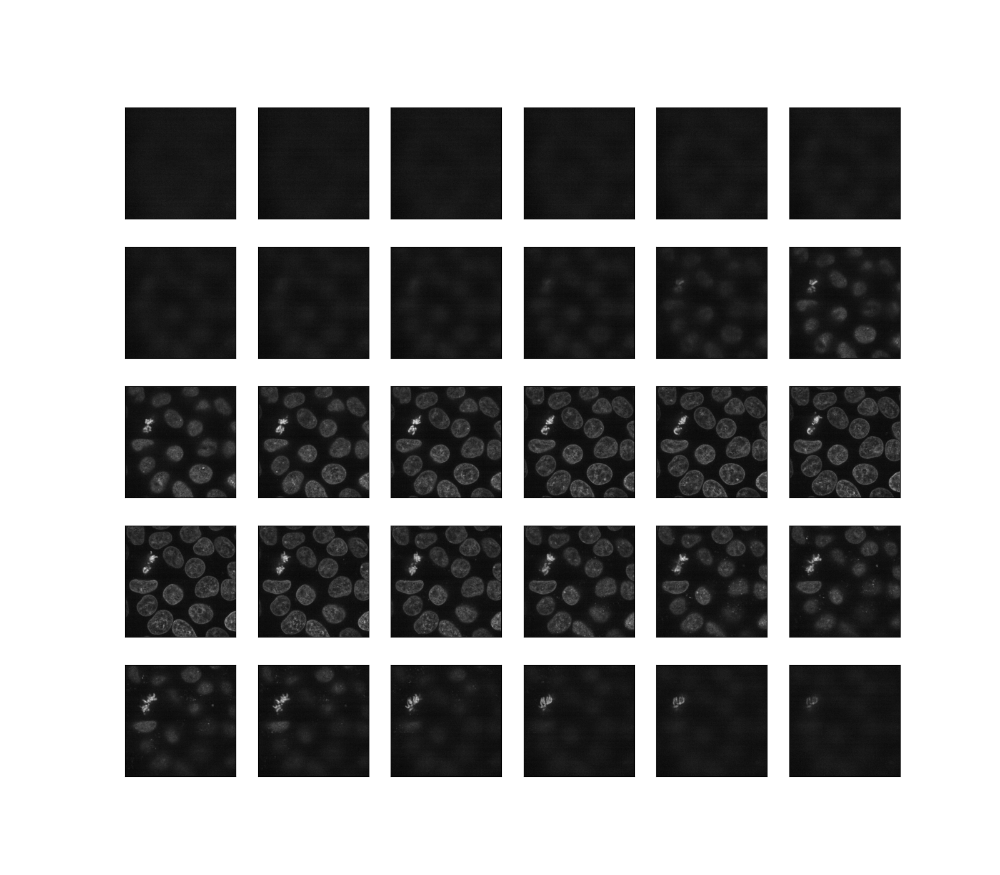
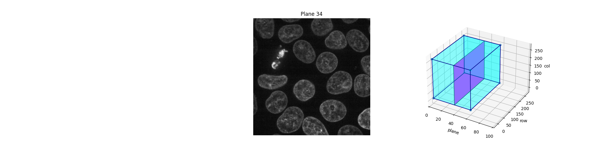
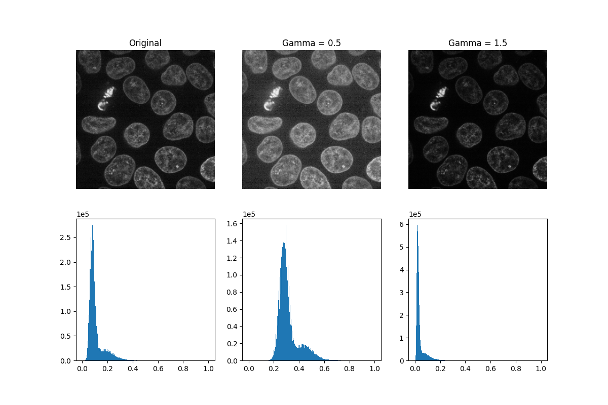
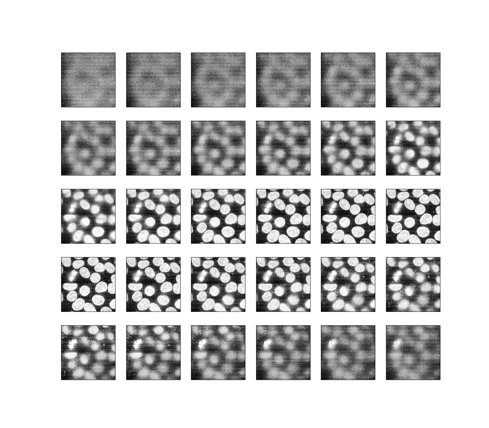
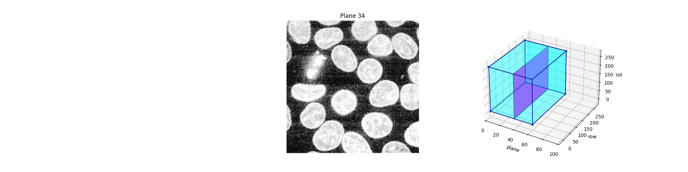
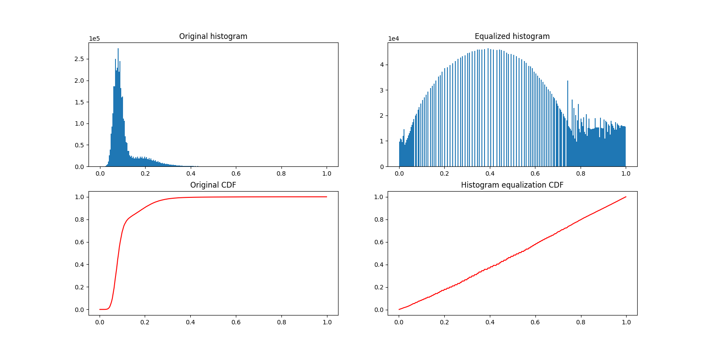
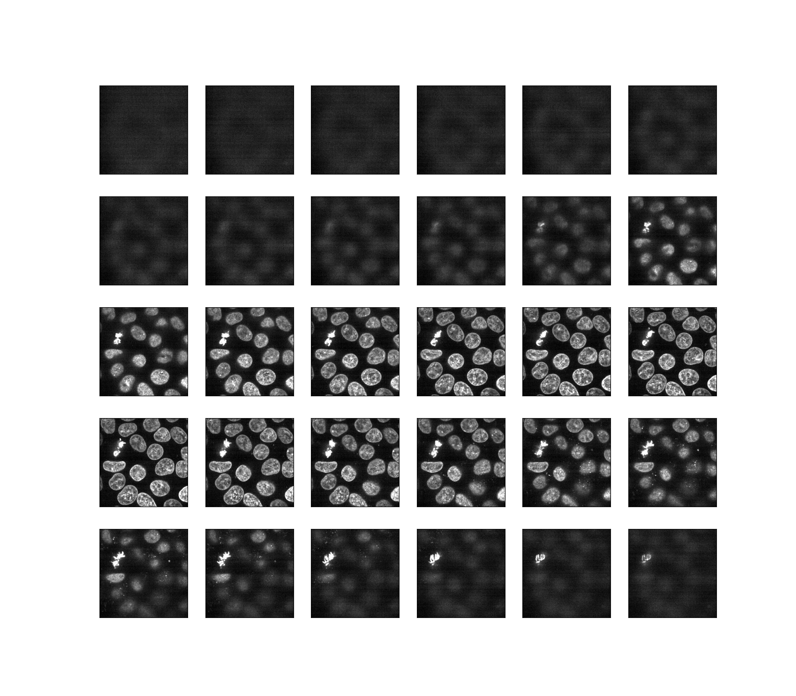

<!DOCTYPE html>
<html lang="en">
<head>
        <title>Explore 3D images (of cells) &mdash; skimage v0.18.0 docs</title>
    <link rel="stylesheet" href="../../_static/pygments.css" type="text/css" />
    <link href="../../_static/css/bootstrap.min.css" rel="stylesheet" type="text/css">
    <link href="../../_static/css/custom.css" rel="stylesheet" type="text/css">
    <link href="https://fonts.googleapis.com/css?family=Raleway" rel="stylesheet" type="text/css">
        <link rel="stylesheet" href="../../_static/copybutton.css" type="text/css" />
        <link rel="stylesheet" href="../../_static/gallery.css" type="text/css" />
        <link rel="stylesheet" href="../../_static/gallery-binder.css" type="text/css" />
        <link rel="stylesheet" href="../../_static/gallery-dataframe.css" type="text/css" />
    
    <script src="https://code.jquery.com/jquery-latest.js"></script>
    <script src="../../_static/js/bootstrap.min.js"></script>
    <script src="../../_static/js/togglebutton.js"></script>
    <script type="text/javascript">
      var DOCUMENTATION_OPTIONS = {
        URL_ROOT:    '../../',
        VERSION:     '0.18.0',
        COLLAPSE_INDEX: false,
        FILE_SUFFIX: '.html',
        HAS_SOURCE:  true
      };
    </script>
    <script src="../../_static/jquery.js"></script>
    <script src="../../_static/underscore.js"></script>
    <script src="../../_static/doctools.js"></script>
    <script src="../../_static/language_data.js"></script>
    <script src="../../_static/clipboard.min.js"></script>
    <script src="../../_static/copybutton.js"></script>
    <script async="async" src="https://cdnjs.cloudflare.com/ajax/libs/mathjax/2.7.5/latest.js?config=TeX-AMS-MML_HTMLorMML"></script>
    <script type="text/x-mathjax-config">MathJax.Hub.Config({"tex2jax": {"inlineMath": [["\\(", "\\)"]], "displayMath": [["\\[", "\\]"]], "processRefs": false, "processEnvironments": false}})</script>
        <link rel="index" title="Index" href="../../genindex.html" />
        <link rel="search" title="Search" href="../../search.html" />
        <link rel="top" title="skimage v0.18.0 docs" href="../../index.html" />
        <link rel="up" title="General examples" href="../index.html" />
        <link rel="next" title="Rank filters" href="plot_rank_filters.html" />
        <link rel="prev" title="Face classification using Haar-like feature descriptor" href="plot_haar_extraction_selection_classification.html" />
    <meta http-equiv="Content-Type" content="text/html;charset=utf-8">
    <link rel="shortcut icon" href="../../_static/favicon.ico">
    <!-- Plausible analytics -->
    <script async defer data-domain="scikit-image.org" src="https://plausible.io/js/plausible.outbound-links.js"></script>
</head>
<body class="container">
    <a href="https://scikit-image.org" class="logo"></a>
    <div class="clearfix"></div>
    <div class="navbar">
        <div class="navbar-inner">
            <ul class="nav">
                <li><a href="/docs/stable/install.html">Installation</a></li>
<li><a href="../index.html">Gallery</a></li>
<li><a href="../../index.html">Documentation</a></li>
<li><a href="/community_guidelines.html">Community</a></li>

<li><a href="https://github.com/scikit-image/scikit-image">
    
    Source</a>
</li>
            </ul>
        </div>
    </div>
    <div class="row">
        <div class="span3"><div style="padding-bottom: 3em">
  <form class="navbar-form pull-right" action="../../search.html" method="get">
    <input type="text" class="search span3" name="q" placeholder="Search documentation ...">
    <input type="hidden" name="check_keywords" value="yes" >
    <input type="hidden" name="area" value="default" >
  </form>
</div><!-- 
        <h4 class="sidebar-box-heading">Contents</h4>
        <div class="well sidebar-box toc">
            <ul class="nav nav-list">
<li><a class="reference internal" href="#">Explore 3D images (of cells)</a><ul class="nav nav-list">
<li><a class="reference internal" href="#load-and-display-3d-images">Load and display 3D images</a></li>
<li><a class="reference internal" href="#adjust-exposure">Adjust exposure</a></li>
</ul>
</li>
</ul>

        </div>


 --><div class="well">
    <strong>Docs for 0.18.0<br></strong>

    <a id="other">All versions</a>

    <ul id="versionList" style="display: none;">
        <script src="../../../dev/_static/docversions.js"></script>
        <script type="text/javascript">
            insert_version_links();
        </script>
    </ul>

 </div>

<script type="text/javascript">
	$("#other").click(function() {
		$("#versionList").toggle();
	});
</script>
        </div>
        <div class="span9" class="body" role="main">
            
  <div class="sphx-glr-download-link-note admonition note">
<p class="admonition-title">Note</p>
<p>Click <a class="reference internal" href="#sphx-glr-download-auto-examples-applications-plot-3d-image-processing-py"><span class="std std-ref">here</span></a>     to download the full example code or to run this example in your browser via Binder</p>
</div>
<div class="sphx-glr-example-title section" id="explore-3d-images-of-cells">
<span id="sphx-glr-auto-examples-applications-plot-3d-image-processing-py"></span><h1>Explore 3D images (of cells)<a class="headerlink" href="#explore-3d-images-of-cells" title="Permalink to this headline">¶</a></h1>
<p>This tutorial is an introduction to three-dimensional image processing. Images
are represented as <a class="reference external" href="https://numpy.org/doc/stable/reference/index.html#module-numpy" title="(in NumPy v1.19)"><code class="xref py py-obj docutils literal notranslate"><span class="pre">numpy</span></code></a> arrays. A single-channel, or grayscale, image is a
2D matrix of pixel intensities of shape <code class="docutils literal notranslate"><span class="pre">(n_row,</span> <span class="pre">n_col)</span></code>, where <code class="docutils literal notranslate"><span class="pre">n_row</span></code>
(resp. <code class="docutils literal notranslate"><span class="pre">n_col</span></code>) denotes the number of <em class="xref py py-obj">rows</em> (resp. <em class="xref py py-obj">columns</em>). We can
construct a 3D volume as a series of 2D <em class="xref py py-obj">planes</em>, giving 3D images the shape
<code class="docutils literal notranslate"><span class="pre">(n_plane,</span> <span class="pre">n_row,</span> <span class="pre">n_col)</span></code>, where <code class="docutils literal notranslate"><span class="pre">n_plane</span></code> is the number of planes.
A multichannel, or RGB(A), image has an additional
<em class="xref py py-obj">channel</em> dimension in the final position containing color information.</p>
<p>These conventions are summarized in the table below:</p>
<table class="docutils align-default">
<colgroup>
<col style="width: 31%" />
<col style="width: 69%" />
</colgroup>
<thead>
<tr class="row-odd"><th class="head"><p>Image type</p></th>
<th class="head"><p>Coordinates</p></th>
</tr>
</thead>
<tbody>
<tr class="row-even"><td><p>2D grayscale</p></td>
<td><p><code class="docutils literal notranslate"><span class="pre">[row,</span> <span class="pre">column]</span></code></p></td>
</tr>
<tr class="row-odd"><td><p>2D multichannel</p></td>
<td><p><code class="docutils literal notranslate"><span class="pre">[row,</span> <span class="pre">column,</span> <span class="pre">channel]</span></code></p></td>
</tr>
<tr class="row-even"><td><p>3D grayscale</p></td>
<td><p><code class="docutils literal notranslate"><span class="pre">[plane,</span> <span class="pre">row,</span> <span class="pre">column]</span></code></p></td>
</tr>
<tr class="row-odd"><td><p>3D multichannel</p></td>
<td><p><code class="docutils literal notranslate"><span class="pre">[plane,</span> <span class="pre">row,</span> <span class="pre">column,</span> <span class="pre">channel]</span></code></p></td>
</tr>
</tbody>
</table>
<p>Some 3D images are constructed with equal resolution in each dimension (e.g.,
synchrotron tomography or computer-generated rendering of a sphere).
But most experimental data are captured
with a lower resolution in one of the three dimensions, e.g., photographing
thin slices to approximate a 3D structure as a stack of 2D images.
The distance between pixels in each dimension, called spacing, is encoded as a
tuple and is accepted as a parameter by some <a class="reference internal" href="../../api/skimage.html#module-skimage" title="skimage"><code class="xref py py-obj docutils literal notranslate"><span class="pre">skimage</span></code></a> functions and can be
used to adjust contributions to filters.</p>
<p>The data used in this tutorial were provided by the Allen Institute for Cell
Science. They were downsampled by a factor of 4 in the <em class="xref py py-obj">row</em> and <em class="xref py py-obj">column</em>
dimensions to reduce their size and, hence, computational time. The spacing
information was reported by the microscope used to image the cells.</p>
<div class="highlight-default notranslate"><div class="highlight"><pre><span></span><span class="kn">import</span> <span class="nn">matplotlib.pyplot</span> <span class="k">as</span> <span class="nn">plt</span>
<span class="kn">from</span> <span class="nn">mpl_toolkits.mplot3d.art3d</span> <span class="kn">import</span> <a href="https://matplotlib.org/api/collections_api.html#matplotlib.collections.PolyCollection" title="matplotlib.collections.PolyCollection" class="sphx-glr-backref-module-matplotlib-collections sphx-glr-backref-type-py-class"><span class="n">Poly3DCollection</span></a>
<span class="kn">import</span> <span class="nn">numpy</span> <span class="k">as</span> <span class="nn">np</span>

<span class="kn">from</span> <span class="nn">skimage</span> <span class="kn">import</span> <span class="n">exposure</span><span class="p">,</span> <span class="n">io</span><span class="p">,</span> <span class="n">util</span>
<span class="kn">from</span> <span class="nn">skimage.data</span> <span class="kn">import</span> <span class="n">cells3d</span>
</pre></div>
</div>
<div class="section" id="load-and-display-3d-images">
<h2>Load and display 3D images<a class="headerlink" href="#load-and-display-3d-images" title="Permalink to this headline">¶</a></h2>
<div class="highlight-default notranslate"><div class="highlight"><pre><span></span><a href="https://numpy.org/doc/stable/reference/generated/numpy.ndarray.html#numpy.ndarray" title="numpy.ndarray" class="sphx-glr-backref-module-numpy sphx-glr-backref-type-py-class sphx-glr-backref-instance"><span class="n">data</span></a> <span class="o">=</span> <a href="../../api/skimage.html#skimage.img_as_float" title="skimage.img_as_float" class="sphx-glr-backref-module-skimage sphx-glr-backref-type-py-function"><span class="n">util</span><span class="o">.</span><span class="n">img_as_float</span></a><span class="p">(</span><span class="n">cells3d</span><span class="p">()[:,</span> <span class="mi">1</span><span class="p">,</span> <span class="p">:,</span> <span class="p">:])</span>  <span class="c1"># grab just the nuclei</span>

<span class="nb">print</span><span class="p">(</span><span class="s2">&quot;shape: </span><span class="si">{}</span><span class="s2">&quot;</span><span class="o">.</span><span class="n">format</span><span class="p">(</span><a href="https://docs.python.org/3.9/library/stdtypes.html#tuple" title="builtins.tuple" class="sphx-glr-backref-module-builtins sphx-glr-backref-type-py-class sphx-glr-backref-instance"><span class="n">data</span><span class="o">.</span><span class="n">shape</span></a><span class="p">))</span>
<span class="nb">print</span><span class="p">(</span><span class="s2">&quot;dtype: </span><span class="si">{}</span><span class="s2">&quot;</span><span class="o">.</span><span class="n">format</span><span class="p">(</span><a href="https://numpy.org/doc/stable/reference/generated/numpy.ndarray.html#numpy.ndarray" title="numpy.ndarray" class="sphx-glr-backref-module-numpy sphx-glr-backref-type-py-class sphx-glr-backref-instance"><span class="n">data</span></a><span class="o">.</span><span class="n">dtype</span><span class="p">))</span>
<span class="nb">print</span><span class="p">(</span><span class="s2">&quot;range: (</span><span class="si">{}</span><span class="s2">, </span><span class="si">{}</span><span class="s2">)&quot;</span><span class="o">.</span><span class="n">format</span><span class="p">(</span><a href="https://numpy.org/doc/stable/reference/generated/numpy.ndarray.html#numpy.ndarray" title="numpy.ndarray" class="sphx-glr-backref-module-numpy sphx-glr-backref-type-py-class sphx-glr-backref-instance"><span class="n">data</span></a><span class="o">.</span><span class="n">min</span><span class="p">(),</span> <a href="https://numpy.org/doc/stable/reference/generated/numpy.ndarray.html#numpy.ndarray" title="numpy.ndarray" class="sphx-glr-backref-module-numpy sphx-glr-backref-type-py-class sphx-glr-backref-instance"><span class="n">data</span></a><span class="o">.</span><span class="n">max</span><span class="p">()))</span>

<span class="c1"># Report spacing from microscope</span>
<a href="https://numpy.org/doc/stable/reference/generated/numpy.ndarray.html#numpy.ndarray" title="numpy.ndarray" class="sphx-glr-backref-module-numpy sphx-glr-backref-type-py-class sphx-glr-backref-instance"><span class="n">original_spacing</span></a> <span class="o">=</span> <a href="https://numpy.org/doc/stable/reference/generated/numpy.array.html#numpy.array" title="numpy.array" class="sphx-glr-backref-module-numpy sphx-glr-backref-type-py-function"><span class="n">np</span><span class="o">.</span><span class="n">array</span></a><span class="p">([</span><span class="mf">0.2900000</span><span class="p">,</span> <span class="mf">0.0650000</span><span class="p">,</span> <span class="mf">0.0650000</span><span class="p">])</span>

<span class="c1"># Account for downsampling of slices by 4</span>
<a href="https://numpy.org/doc/stable/reference/generated/numpy.ndarray.html#numpy.ndarray" title="numpy.ndarray" class="sphx-glr-backref-module-numpy sphx-glr-backref-type-py-class sphx-glr-backref-instance"><span class="n">rescaled_spacing</span></a> <span class="o">=</span> <a href="https://numpy.org/doc/stable/reference/generated/numpy.ndarray.html#numpy.ndarray" title="numpy.ndarray" class="sphx-glr-backref-module-numpy sphx-glr-backref-type-py-class sphx-glr-backref-instance"><span class="n">original_spacing</span></a> <span class="o">*</span> <span class="p">[</span><span class="mi">1</span><span class="p">,</span> <span class="mi">4</span><span class="p">,</span> <span class="mi">4</span><span class="p">]</span>

<span class="c1"># Normalize spacing so that pixels are a distance of 1 apart</span>
<a href="https://numpy.org/doc/stable/reference/generated/numpy.ndarray.html#numpy.ndarray" title="numpy.ndarray" class="sphx-glr-backref-module-numpy sphx-glr-backref-type-py-class sphx-glr-backref-instance"><span class="n">spacing</span></a> <span class="o">=</span> <a href="https://numpy.org/doc/stable/reference/generated/numpy.ndarray.html#numpy.ndarray" title="numpy.ndarray" class="sphx-glr-backref-module-numpy sphx-glr-backref-type-py-class sphx-glr-backref-instance"><span class="n">rescaled_spacing</span></a> <span class="o">/</span> <a href="https://numpy.org/doc/stable/reference/generated/numpy.ndarray.html#numpy.ndarray" title="numpy.ndarray" class="sphx-glr-backref-module-numpy sphx-glr-backref-type-py-class sphx-glr-backref-instance"><span class="n">rescaled_spacing</span></a><span class="p">[</span><span class="mi">2</span><span class="p">]</span>

<span class="nb">print</span><span class="p">(</span><span class="s2">&quot;microscope spacing: </span><span class="si">{}</span><span class="se">\n</span><span class="s2">&quot;</span><span class="o">.</span><span class="n">format</span><span class="p">(</span><a href="https://numpy.org/doc/stable/reference/generated/numpy.ndarray.html#numpy.ndarray" title="numpy.ndarray" class="sphx-glr-backref-module-numpy sphx-glr-backref-type-py-class sphx-glr-backref-instance"><span class="n">original_spacing</span></a><span class="p">))</span>
<span class="nb">print</span><span class="p">(</span><span class="s2">&quot;rescaled spacing: </span><span class="si">{}</span><span class="s2"> (after downsampling)</span><span class="se">\n</span><span class="s2">&quot;</span><span class="o">.</span><span class="n">format</span><span class="p">(</span><a href="https://numpy.org/doc/stable/reference/generated/numpy.ndarray.html#numpy.ndarray" title="numpy.ndarray" class="sphx-glr-backref-module-numpy sphx-glr-backref-type-py-class sphx-glr-backref-instance"><span class="n">rescaled_spacing</span></a><span class="p">))</span>
<span class="nb">print</span><span class="p">(</span><span class="s2">&quot;normalized spacing: </span><span class="si">{}</span><span class="se">\n</span><span class="s2">&quot;</span><span class="o">.</span><span class="n">format</span><span class="p">(</span><a href="https://numpy.org/doc/stable/reference/generated/numpy.ndarray.html#numpy.ndarray" title="numpy.ndarray" class="sphx-glr-backref-module-numpy sphx-glr-backref-type-py-class sphx-glr-backref-instance"><span class="n">spacing</span></a><span class="p">))</span>
</pre></div>
</div>
<p class="sphx-glr-script-out">Out:</p>
<div class="sphx-glr-script-out highlight-none notranslate"><div class="highlight"><pre><span></span>shape: (60, 256, 256)
dtype: float64
range: (0.0, 1.0)
microscope spacing: [0.29  0.065 0.065]

rescaled spacing: [0.29 0.26 0.26] (after downsampling)

normalized spacing: [1.11538462 1.         1.        ]
</pre></div>
</div>
<p>Let us try and visualize the (3D) image with <em class="xref py py-obj">io.imshow</em>.</p>
<div class="highlight-default notranslate"><div class="highlight"><pre><span></span><span class="k">try</span><span class="p">:</span>
    <a href="../../api/skimage.io.html#skimage.io.imshow" title="skimage.io.imshow" class="sphx-glr-backref-module-skimage-io sphx-glr-backref-type-py-function"><span class="n">io</span><span class="o">.</span><span class="n">imshow</span></a><span class="p">(</span><a href="https://numpy.org/doc/stable/reference/generated/numpy.ndarray.html#numpy.ndarray" title="numpy.ndarray" class="sphx-glr-backref-module-numpy sphx-glr-backref-type-py-class sphx-glr-backref-instance"><span class="n">data</span></a><span class="p">,</span> <span class="n">cmap</span><span class="o">=</span><span class="s2">&quot;gray&quot;</span><span class="p">)</span>
<span class="k">except</span> <span class="ne">TypeError</span> <span class="k">as</span> <span class="n">e</span><span class="p">:</span>
    <span class="nb">print</span><span class="p">(</span><span class="nb">str</span><span class="p">(</span><span class="n">e</span><span class="p">))</span>
</pre></div>
</div>

<p class="sphx-glr-script-out">Out:</p>
<div class="sphx-glr-script-out highlight-none notranslate"><div class="highlight"><pre><span></span>Invalid shape (60, 256, 256) for image data
</pre></div>
</div>
<p>The <em class="xref py py-obj">io.imshow</em> function can only display grayscale and RGB(A) 2D images.
We can thus use it to visualize 2D planes. By fixing one axis, we can
observe three different views of the image.</p>
<div class="highlight-default notranslate"><div class="highlight"><pre><span></span><span class="k">def</span> <span class="nf">show_plane</span><span class="p">(</span><span class="n">ax</span><span class="p">,</span> <span class="n">plane</span><span class="p">,</span> <span class="n">cmap</span><span class="o">=</span><span class="s2">&quot;gray&quot;</span><span class="p">,</span> <span class="n">title</span><span class="o">=</span><span class="kc">None</span><span class="p">):</span>
    <span class="n">ax</span><span class="o">.</span><span class="n">imshow</span><span class="p">(</span><span class="n">plane</span><span class="p">,</span> <span class="n">cmap</span><span class="o">=</span><span class="n">cmap</span><span class="p">)</span>
    <span class="n">ax</span><span class="o">.</span><span class="n">axis</span><span class="p">(</span><span class="s2">&quot;off&quot;</span><span class="p">)</span>

    <span class="k">if</span> <span class="n">title</span><span class="p">:</span>
        <span class="n">ax</span><span class="o">.</span><span class="n">set_title</span><span class="p">(</span><span class="n">title</span><span class="p">)</span>


<span class="p">(</span><a href="https://docs.python.org/3.9/library/functions.html#int" title="builtins.int" class="sphx-glr-backref-module-builtins sphx-glr-backref-type-py-class sphx-glr-backref-instance"><span class="n">n_plane</span></a><span class="p">,</span> <a href="https://docs.python.org/3.9/library/functions.html#int" title="builtins.int" class="sphx-glr-backref-module-builtins sphx-glr-backref-type-py-class sphx-glr-backref-instance"><span class="n">n_row</span></a><span class="p">,</span> <a href="https://docs.python.org/3.9/library/functions.html#int" title="builtins.int" class="sphx-glr-backref-module-builtins sphx-glr-backref-type-py-class sphx-glr-backref-instance"><span class="n">n_col</span></a><span class="p">)</span> <span class="o">=</span> <a href="https://docs.python.org/3.9/library/stdtypes.html#tuple" title="builtins.tuple" class="sphx-glr-backref-module-builtins sphx-glr-backref-type-py-class sphx-glr-backref-instance"><span class="n">data</span><span class="o">.</span><span class="n">shape</span></a>
<a href="https://matplotlib.org/api/_as_gen/matplotlib.figure.Figure.html#matplotlib.figure.Figure" title="matplotlib.figure.Figure" class="sphx-glr-backref-module-matplotlib-figure sphx-glr-backref-type-py-class sphx-glr-backref-instance"><span class="n">_</span></a><span class="p">,</span> <span class="p">(</span><span class="n">a</span><span class="p">,</span> <span class="n">b</span><span class="p">,</span> <span class="n">c</span><span class="p">)</span> <span class="o">=</span> <a href="https://matplotlib.org/api/_as_gen/matplotlib.pyplot.subplots.html#matplotlib.pyplot.subplots" title="matplotlib.pyplot.subplots" class="sphx-glr-backref-module-matplotlib-pyplot sphx-glr-backref-type-py-function"><span class="n">plt</span><span class="o">.</span><span class="n">subplots</span></a><span class="p">(</span><span class="n">ncols</span><span class="o">=</span><span class="mi">3</span><span class="p">,</span> <span class="n">figsize</span><span class="o">=</span><span class="p">(</span><span class="mi">15</span><span class="p">,</span> <span class="mi">5</span><span class="p">))</span>

<span class="n">show_plane</span><span class="p">(</span><span class="n">a</span><span class="p">,</span> <a href="https://numpy.org/doc/stable/reference/generated/numpy.ndarray.html#numpy.ndarray" title="numpy.ndarray" class="sphx-glr-backref-module-numpy sphx-glr-backref-type-py-class sphx-glr-backref-instance"><span class="n">data</span></a><span class="p">[</span><a href="https://docs.python.org/3.9/library/functions.html#int" title="builtins.int" class="sphx-glr-backref-module-builtins sphx-glr-backref-type-py-class sphx-glr-backref-instance"><span class="n">n_plane</span></a> <span class="o">//</span> <span class="mi">2</span><span class="p">],</span> <span class="n">title</span><span class="o">=</span><span class="sa">f</span><span class="s1">&#39;Plane = </span><span class="si">{</span><a href="https://docs.python.org/3.9/library/functions.html#int" title="builtins.int" class="sphx-glr-backref-module-builtins sphx-glr-backref-type-py-class sphx-glr-backref-instance"><span class="n">n_plane</span></a> <span class="o">//</span> <span class="mi">2</span><span class="si">}</span><span class="s1">&#39;</span><span class="p">)</span>
<span class="n">show_plane</span><span class="p">(</span><span class="n">b</span><span class="p">,</span> <a href="https://numpy.org/doc/stable/reference/generated/numpy.ndarray.html#numpy.ndarray" title="numpy.ndarray" class="sphx-glr-backref-module-numpy sphx-glr-backref-type-py-class sphx-glr-backref-instance"><span class="n">data</span></a><span class="p">[:,</span> <a href="https://docs.python.org/3.9/library/functions.html#int" title="builtins.int" class="sphx-glr-backref-module-builtins sphx-glr-backref-type-py-class sphx-glr-backref-instance"><span class="n">n_row</span></a> <span class="o">//</span> <span class="mi">2</span><span class="p">,</span> <span class="p">:],</span> <span class="n">title</span><span class="o">=</span><span class="sa">f</span><span class="s1">&#39;Row = </span><span class="si">{</span><a href="https://docs.python.org/3.9/library/functions.html#int" title="builtins.int" class="sphx-glr-backref-module-builtins sphx-glr-backref-type-py-class sphx-glr-backref-instance"><span class="n">n_row</span></a> <span class="o">//</span> <span class="mi">2</span><span class="si">}</span><span class="s1">&#39;</span><span class="p">)</span>
<span class="n">show_plane</span><span class="p">(</span><span class="n">c</span><span class="p">,</span> <a href="https://numpy.org/doc/stable/reference/generated/numpy.ndarray.html#numpy.ndarray" title="numpy.ndarray" class="sphx-glr-backref-module-numpy sphx-glr-backref-type-py-class sphx-glr-backref-instance"><span class="n">data</span></a><span class="p">[:,</span> <span class="p">:,</span> <a href="https://docs.python.org/3.9/library/functions.html#int" title="builtins.int" class="sphx-glr-backref-module-builtins sphx-glr-backref-type-py-class sphx-glr-backref-instance"><span class="n">n_col</span></a> <span class="o">//</span> <span class="mi">2</span><span class="p">],</span> <span class="n">title</span><span class="o">=</span><span class="sa">f</span><span class="s1">&#39;Column = </span><span class="si">{</span><a href="https://docs.python.org/3.9/library/functions.html#int" title="builtins.int" class="sphx-glr-backref-module-builtins sphx-glr-backref-type-py-class sphx-glr-backref-instance"><span class="n">n_col</span></a> <span class="o">//</span> <span class="mi">2</span><span class="si">}</span><span class="s1">&#39;</span><span class="p">)</span>
</pre></div>
</div>

<p>As hinted before, a three-dimensional image can be viewed as a series of
two-dimensional planes. Let us write a helper function, <em class="xref py py-obj">display</em>, to
display 30 planes of our data. By default, every other plane is displayed.</p>
<div class="highlight-default notranslate"><div class="highlight"><pre><span></span><span class="k">def</span> <span class="nf">display</span><span class="p">(</span><span class="n">im3d</span><span class="p">,</span> <span class="n">cmap</span><span class="o">=</span><span class="s2">&quot;gray&quot;</span><span class="p">,</span> <span class="n">step</span><span class="o">=</span><span class="mi">2</span><span class="p">):</span>
    <a href="https://matplotlib.org/api/_as_gen/matplotlib.figure.Figure.html#matplotlib.figure.Figure" title="matplotlib.figure.Figure" class="sphx-glr-backref-module-matplotlib-figure sphx-glr-backref-type-py-class sphx-glr-backref-instance"><span class="n">_</span></a><span class="p">,</span> <span class="n">axes</span> <span class="o">=</span> <a href="https://matplotlib.org/api/_as_gen/matplotlib.pyplot.subplots.html#matplotlib.pyplot.subplots" title="matplotlib.pyplot.subplots" class="sphx-glr-backref-module-matplotlib-pyplot sphx-glr-backref-type-py-function"><span class="n">plt</span><span class="o">.</span><span class="n">subplots</span></a><span class="p">(</span><span class="n">nrows</span><span class="o">=</span><span class="mi">5</span><span class="p">,</span> <span class="n">ncols</span><span class="o">=</span><span class="mi">6</span><span class="p">,</span> <span class="n">figsize</span><span class="o">=</span><span class="p">(</span><span class="mi">16</span><span class="p">,</span> <span class="mi">14</span><span class="p">))</span>

    <span class="n">vmin</span> <span class="o">=</span> <span class="n">im3d</span><span class="o">.</span><span class="n">min</span><span class="p">()</span>
    <span class="n">vmax</span> <span class="o">=</span> <span class="n">im3d</span><span class="o">.</span><span class="n">max</span><span class="p">()</span>

    <span class="k">for</span> <span class="n">ax</span><span class="p">,</span> <span class="n">image</span> <span class="ow">in</span> <span class="nb">zip</span><span class="p">(</span><span class="n">axes</span><span class="o">.</span><span class="n">flatten</span><span class="p">(),</span> <span class="n">im3d</span><span class="p">[::</span><span class="n">step</span><span class="p">]):</span>
        <span class="n">ax</span><span class="o">.</span><span class="n">imshow</span><span class="p">(</span><span class="n">image</span><span class="p">,</span> <span class="n">cmap</span><span class="o">=</span><span class="n">cmap</span><span class="p">,</span> <span class="n">vmin</span><span class="o">=</span><span class="n">vmin</span><span class="p">,</span> <span class="n">vmax</span><span class="o">=</span><span class="n">vmax</span><span class="p">)</span>
        <span class="n">ax</span><span class="o">.</span><span class="n">set_xticks</span><span class="p">([])</span>
        <span class="n">ax</span><span class="o">.</span><span class="n">set_yticks</span><span class="p">([])</span>


<span class="n">display</span><span class="p">(</span><a href="https://numpy.org/doc/stable/reference/generated/numpy.ndarray.html#numpy.ndarray" title="numpy.ndarray" class="sphx-glr-backref-module-numpy sphx-glr-backref-type-py-class sphx-glr-backref-instance"><span class="n">data</span></a><span class="p">)</span>
</pre></div>
</div>

<p>Alternatively, we can explore these planes (slices) interactively using
Jupyter widgets. Let the user select which slice to display and show the
position of this slice in the 3D dataset.
Note that you cannot see the Jupyter widget at work in a static HTML page,
as is the case in the scikit-image gallery. For the following piece of
code to work, you need a Jupyter kernel running either locally or in the
cloud: see the bottom of this page to either download the Jupyter notebook
and run it on your computer, or open it directly in Binder.</p>
<div class="highlight-default notranslate"><div class="highlight"><pre><span></span><span class="k">def</span> <span class="nf">slice_in_3D</span><span class="p">(</span><span class="n">ax</span><span class="p">,</span> <span class="n">i</span><span class="p">):</span>
    <span class="c1"># From https://stackoverflow.com/questions/44881885/python-draw-3d-cube</span>
    <span class="n">Z</span> <span class="o">=</span> <a href="https://numpy.org/doc/stable/reference/generated/numpy.array.html#numpy.array" title="numpy.array" class="sphx-glr-backref-module-numpy sphx-glr-backref-type-py-function"><span class="n">np</span><span class="o">.</span><span class="n">array</span></a><span class="p">([[</span><span class="mi">0</span><span class="p">,</span> <span class="mi">0</span><span class="p">,</span> <span class="mi">0</span><span class="p">],</span>
                  <span class="p">[</span><span class="mi">1</span><span class="p">,</span> <span class="mi">0</span><span class="p">,</span> <span class="mi">0</span><span class="p">],</span>
                  <span class="p">[</span><span class="mi">1</span><span class="p">,</span> <span class="mi">1</span><span class="p">,</span> <span class="mi">0</span><span class="p">],</span>
                  <span class="p">[</span><span class="mi">0</span><span class="p">,</span> <span class="mi">1</span><span class="p">,</span> <span class="mi">0</span><span class="p">],</span>
                  <span class="p">[</span><span class="mi">0</span><span class="p">,</span> <span class="mi">0</span><span class="p">,</span> <span class="mi">1</span><span class="p">],</span>
                  <span class="p">[</span><span class="mi">1</span><span class="p">,</span> <span class="mi">0</span><span class="p">,</span> <span class="mi">1</span><span class="p">],</span>
                  <span class="p">[</span><span class="mi">1</span><span class="p">,</span> <span class="mi">1</span><span class="p">,</span> <span class="mi">1</span><span class="p">],</span>
                  <span class="p">[</span><span class="mi">0</span><span class="p">,</span> <span class="mi">1</span><span class="p">,</span> <span class="mi">1</span><span class="p">]])</span>

    <span class="n">Z</span> <span class="o">=</span> <span class="n">Z</span> <span class="o">*</span> <a href="https://docs.python.org/3.9/library/stdtypes.html#tuple" title="builtins.tuple" class="sphx-glr-backref-module-builtins sphx-glr-backref-type-py-class sphx-glr-backref-instance"><span class="n">data</span><span class="o">.</span><span class="n">shape</span></a>
    <span class="n">r</span> <span class="o">=</span> <span class="p">[</span><span class="o">-</span><span class="mi">1</span><span class="p">,</span> <span class="mi">1</span><span class="p">]</span>
    <span class="n">X</span><span class="p">,</span> <span class="n">Y</span> <span class="o">=</span> <a href="https://numpy.org/doc/stable/reference/generated/numpy.meshgrid.html#numpy.meshgrid" title="numpy.meshgrid" class="sphx-glr-backref-module-numpy sphx-glr-backref-type-py-function"><span class="n">np</span><span class="o">.</span><span class="n">meshgrid</span></a><span class="p">(</span><span class="n">r</span><span class="p">,</span> <span class="n">r</span><span class="p">)</span>

    <span class="c1"># Plot vertices</span>
    <span class="n">ax</span><span class="o">.</span><span class="n">scatter3D</span><span class="p">(</span><span class="n">Z</span><span class="p">[:,</span> <span class="mi">0</span><span class="p">],</span> <span class="n">Z</span><span class="p">[:,</span> <span class="mi">1</span><span class="p">],</span> <span class="n">Z</span><span class="p">[:,</span> <span class="mi">2</span><span class="p">])</span>

    <span class="c1"># List sides&#39; polygons of figure</span>
    <span class="n">verts</span> <span class="o">=</span> <span class="p">[[</span><span class="n">Z</span><span class="p">[</span><span class="mi">0</span><span class="p">],</span> <span class="n">Z</span><span class="p">[</span><span class="mi">1</span><span class="p">],</span> <span class="n">Z</span><span class="p">[</span><span class="mi">2</span><span class="p">],</span> <span class="n">Z</span><span class="p">[</span><span class="mi">3</span><span class="p">]],</span>
             <span class="p">[</span><span class="n">Z</span><span class="p">[</span><span class="mi">4</span><span class="p">],</span> <span class="n">Z</span><span class="p">[</span><span class="mi">5</span><span class="p">],</span> <span class="n">Z</span><span class="p">[</span><span class="mi">6</span><span class="p">],</span> <span class="n">Z</span><span class="p">[</span><span class="mi">7</span><span class="p">]],</span>
             <span class="p">[</span><span class="n">Z</span><span class="p">[</span><span class="mi">0</span><span class="p">],</span> <span class="n">Z</span><span class="p">[</span><span class="mi">1</span><span class="p">],</span> <span class="n">Z</span><span class="p">[</span><span class="mi">5</span><span class="p">],</span> <span class="n">Z</span><span class="p">[</span><span class="mi">4</span><span class="p">]],</span>
             <span class="p">[</span><span class="n">Z</span><span class="p">[</span><span class="mi">2</span><span class="p">],</span> <span class="n">Z</span><span class="p">[</span><span class="mi">3</span><span class="p">],</span> <span class="n">Z</span><span class="p">[</span><span class="mi">7</span><span class="p">],</span> <span class="n">Z</span><span class="p">[</span><span class="mi">6</span><span class="p">]],</span>
             <span class="p">[</span><span class="n">Z</span><span class="p">[</span><span class="mi">1</span><span class="p">],</span> <span class="n">Z</span><span class="p">[</span><span class="mi">2</span><span class="p">],</span> <span class="n">Z</span><span class="p">[</span><span class="mi">6</span><span class="p">],</span> <span class="n">Z</span><span class="p">[</span><span class="mi">5</span><span class="p">]],</span>
             <span class="p">[</span><span class="n">Z</span><span class="p">[</span><span class="mi">4</span><span class="p">],</span> <span class="n">Z</span><span class="p">[</span><span class="mi">7</span><span class="p">],</span> <span class="n">Z</span><span class="p">[</span><span class="mi">3</span><span class="p">],</span> <span class="n">Z</span><span class="p">[</span><span class="mi">0</span><span class="p">]],</span>
             <span class="p">[</span><span class="n">Z</span><span class="p">[</span><span class="mi">2</span><span class="p">],</span> <span class="n">Z</span><span class="p">[</span><span class="mi">3</span><span class="p">],</span> <span class="n">Z</span><span class="p">[</span><span class="mi">7</span><span class="p">],</span> <span class="n">Z</span><span class="p">[</span><span class="mi">6</span><span class="p">]]]</span>

    <span class="c1"># Plot sides</span>
    <span class="n">ax</span><span class="o">.</span><span class="n">add_collection3d</span><span class="p">(</span>
        <a href="https://matplotlib.org/api/collections_api.html#matplotlib.collections.PolyCollection" title="matplotlib.collections.PolyCollection" class="sphx-glr-backref-module-matplotlib-collections sphx-glr-backref-type-py-class"><span class="n">Poly3DCollection</span></a><span class="p">(</span>
            <span class="n">verts</span><span class="p">,</span>
            <span class="n">facecolors</span><span class="o">=</span><span class="p">(</span><span class="mi">0</span><span class="p">,</span> <span class="mi">1</span><span class="p">,</span> <span class="mi">1</span><span class="p">,</span> <span class="mf">0.25</span><span class="p">),</span>
            <span class="n">linewidths</span><span class="o">=</span><span class="mi">1</span><span class="p">,</span>
            <span class="n">edgecolors</span><span class="o">=</span><span class="s2">&quot;darkblue&quot;</span>
        <span class="p">)</span>
    <span class="p">)</span>

    <span class="n">verts</span> <span class="o">=</span> <a href="https://numpy.org/doc/stable/reference/generated/numpy.array.html#numpy.array" title="numpy.array" class="sphx-glr-backref-module-numpy sphx-glr-backref-type-py-function"><span class="n">np</span><span class="o">.</span><span class="n">array</span></a><span class="p">([[[</span><span class="mi">0</span><span class="p">,</span> <span class="mi">0</span><span class="p">,</span> <span class="mi">0</span><span class="p">],</span>
                       <span class="p">[</span><span class="mi">0</span><span class="p">,</span> <span class="mi">0</span><span class="p">,</span> <span class="mi">1</span><span class="p">],</span>
                       <span class="p">[</span><span class="mi">0</span><span class="p">,</span> <span class="mi">1</span><span class="p">,</span> <span class="mi">1</span><span class="p">],</span>
                       <span class="p">[</span><span class="mi">0</span><span class="p">,</span> <span class="mi">1</span><span class="p">,</span> <span class="mi">0</span><span class="p">]]])</span>
    <span class="n">verts</span> <span class="o">=</span> <span class="n">verts</span> <span class="o">*</span> <span class="p">(</span><span class="mi">60</span><span class="p">,</span> <span class="mi">256</span><span class="p">,</span> <span class="mi">256</span><span class="p">)</span>
    <span class="n">verts</span> <span class="o">+=</span> <span class="p">[</span><span class="n">i</span><span class="p">,</span> <span class="mi">0</span><span class="p">,</span> <span class="mi">0</span><span class="p">]</span>

    <span class="n">ax</span><span class="o">.</span><span class="n">add_collection3d</span><span class="p">(</span>
        <a href="https://matplotlib.org/api/collections_api.html#matplotlib.collections.PolyCollection" title="matplotlib.collections.PolyCollection" class="sphx-glr-backref-module-matplotlib-collections sphx-glr-backref-type-py-class"><span class="n">Poly3DCollection</span></a><span class="p">(</span>
            <span class="n">verts</span><span class="p">,</span>
            <span class="n">facecolors</span><span class="o">=</span><span class="s2">&quot;magenta&quot;</span><span class="p">,</span>
            <span class="n">linewidths</span><span class="o">=</span><span class="mi">1</span><span class="p">,</span>
            <span class="n">edgecolors</span><span class="o">=</span><span class="s2">&quot;black&quot;</span>
        <span class="p">)</span>
    <span class="p">)</span>

    <span class="n">ax</span><span class="o">.</span><span class="n">set_xlabel</span><span class="p">(</span><span class="s2">&quot;plane&quot;</span><span class="p">)</span>
    <span class="n">ax</span><span class="o">.</span><span class="n">set_xlim</span><span class="p">(</span><span class="mi">0</span><span class="p">,</span> <span class="mi">100</span><span class="p">)</span>
    <span class="n">ax</span><span class="o">.</span><span class="n">set_ylabel</span><span class="p">(</span><span class="s2">&quot;row&quot;</span><span class="p">)</span>
    <span class="n">ax</span><span class="o">.</span><span class="n">set_zlabel</span><span class="p">(</span><span class="s2">&quot;col&quot;</span><span class="p">)</span>

    <span class="c1"># Autoscale plot axes</span>
    <span class="n">scaling</span> <span class="o">=</span> <a href="https://numpy.org/doc/stable/reference/generated/numpy.array.html#numpy.array" title="numpy.array" class="sphx-glr-backref-module-numpy sphx-glr-backref-type-py-function"><span class="n">np</span><span class="o">.</span><span class="n">array</span></a><span class="p">([</span><span class="nb">getattr</span><span class="p">(</span><span class="n">ax</span><span class="p">,</span>
                                <span class="sa">f</span><span class="s1">&#39;get_</span><span class="si">{</span><span class="n">dim</span><span class="si">}</span><span class="s1">lim&#39;</span><span class="p">)()</span> <span class="k">for</span> <span class="n">dim</span> <span class="ow">in</span> <span class="s2">&quot;xyz&quot;</span><span class="p">])</span>
    <span class="n">ax</span><span class="o">.</span><span class="n">auto_scale_xyz</span><span class="p">(</span><span class="o">*</span> <span class="p">[[</span><span class="n">np</span><span class="o">.</span><span class="n">min</span><span class="p">(</span><span class="n">scaling</span><span class="p">),</span> <span class="n">np</span><span class="o">.</span><span class="n">max</span><span class="p">(</span><span class="n">scaling</span><span class="p">)]]</span> <span class="o">*</span> <span class="mi">3</span><span class="p">)</span>


<span class="k">def</span> <span class="nf">explore_slices</span><span class="p">(</span><a href="https://numpy.org/doc/stable/reference/generated/numpy.ndarray.html#numpy.ndarray" title="numpy.ndarray" class="sphx-glr-backref-module-numpy sphx-glr-backref-type-py-class sphx-glr-backref-instance"><span class="n">data</span></a><span class="p">,</span> <span class="n">cmap</span><span class="o">=</span><span class="s2">&quot;gray&quot;</span><span class="p">):</span>
    <span class="kn">from</span> <span class="nn">ipywidgets</span> <span class="kn">import</span> <span class="n">interact</span>
    <span class="n">N</span> <span class="o">=</span> <span class="nb">len</span><span class="p">(</span><a href="https://numpy.org/doc/stable/reference/generated/numpy.ndarray.html#numpy.ndarray" title="numpy.ndarray" class="sphx-glr-backref-module-numpy sphx-glr-backref-type-py-class sphx-glr-backref-instance"><span class="n">data</span></a><span class="p">)</span>

    <span class="nd">@interact</span><span class="p">(</span><span class="n">plane</span><span class="o">=</span><span class="p">(</span><span class="mi">0</span><span class="p">,</span> <span class="n">N</span> <span class="o">-</span> <span class="mi">1</span><span class="p">))</span>
    <span class="k">def</span> <span class="nf">display_slice</span><span class="p">(</span><span class="n">plane</span><span class="o">=</span><span class="mi">34</span><span class="p">):</span>
        <span class="n">fig</span><span class="p">,</span> <span class="n">ax</span> <span class="o">=</span> <a href="https://matplotlib.org/api/_as_gen/matplotlib.pyplot.subplots.html#matplotlib.pyplot.subplots" title="matplotlib.pyplot.subplots" class="sphx-glr-backref-module-matplotlib-pyplot sphx-glr-backref-type-py-function"><span class="n">plt</span><span class="o">.</span><span class="n">subplots</span></a><span class="p">(</span><span class="n">figsize</span><span class="o">=</span><span class="p">(</span><span class="mi">20</span><span class="p">,</span> <span class="mi">5</span><span class="p">))</span>

        <span class="n">ax_3D</span> <span class="o">=</span> <span class="n">fig</span><span class="o">.</span><span class="n">add_subplot</span><span class="p">(</span><span class="mi">133</span><span class="p">,</span> <span class="n">projection</span><span class="o">=</span><span class="s2">&quot;3d&quot;</span><span class="p">)</span>

        <span class="n">show_plane</span><span class="p">(</span><span class="n">ax</span><span class="p">,</span> <a href="https://numpy.org/doc/stable/reference/generated/numpy.ndarray.html#numpy.ndarray" title="numpy.ndarray" class="sphx-glr-backref-module-numpy sphx-glr-backref-type-py-class sphx-glr-backref-instance"><span class="n">data</span></a><span class="p">[</span><span class="n">plane</span><span class="p">],</span> <span class="n">title</span><span class="o">=</span><span class="s2">&quot;Plane </span><span class="si">{}</span><span class="s2">&quot;</span><span class="o">.</span><span class="n">format</span><span class="p">(</span><span class="n">plane</span><span class="p">),</span> <span class="n">cmap</span><span class="o">=</span><span class="n">cmap</span><span class="p">)</span>
        <span class="n">slice_in_3D</span><span class="p">(</span><span class="n">ax_3D</span><span class="p">,</span> <span class="n">plane</span><span class="p">)</span>

        <a href="https://matplotlib.org/api/_as_gen/matplotlib.pyplot.show.html#matplotlib.pyplot.show" title="matplotlib.pyplot.show" class="sphx-glr-backref-module-matplotlib-pyplot sphx-glr-backref-type-py-function"><span class="n">plt</span><span class="o">.</span><span class="n">show</span></a><span class="p">()</span>

    <span class="k">return</span> <span class="n">display_slice</span>


<span class="n">explore_slices</span><span class="p">(</span><a href="https://numpy.org/doc/stable/reference/generated/numpy.ndarray.html#numpy.ndarray" title="numpy.ndarray" class="sphx-glr-backref-module-numpy sphx-glr-backref-type-py-class sphx-glr-backref-instance"><span class="n">data</span></a><span class="p">);</span>
</pre></div>
</div>

<p class="sphx-glr-script-out">Out:</p>
<div class="sphx-glr-script-out highlight-none notranslate"><div class="highlight"><pre><span></span>

interactive(children=(IntSlider(value=34, description=&#39;plane&#39;, max=59), Output()), _dom_classes=(&#39;widget-interact&#39;,))

&lt;function explore_slices.&lt;locals&gt;.display_slice at 0x7ff6677d1ee0&gt;
</pre></div>
</div>
</div>
<div class="section" id="adjust-exposure">
<h2>Adjust exposure<a class="headerlink" href="#adjust-exposure" title="Permalink to this headline">¶</a></h2>
<p>Scikit-image’s <em class="xref py py-obj">exposure</em> module contains a number of functions for
adjusting image contrast. These functions operate on pixel values.
Generally, image dimensionality or pixel spacing doesn’t need to be
considered. In local exposure correction, though, one might want to
adjust the window size to ensure equal size in <em>real</em> coordinates along
each axis.</p>
<p><a class="reference external" href="https://en.wikipedia.org/wiki/Gamma_correction">Gamma correction</a>
brightens or darkens an image. A power-law transform, where <em class="xref py py-obj">gamma</em> denotes
the power-law exponent, is applied to each pixel in the image: <em class="xref py py-obj">gamma &lt; 1</em>
will brighten an image, while <em class="xref py py-obj">gamma &gt; 1</em> will darken an image.</p>
<div class="highlight-default notranslate"><div class="highlight"><pre><span></span><span class="k">def</span> <span class="nf">plot_hist</span><span class="p">(</span><span class="n">ax</span><span class="p">,</span> <a href="https://numpy.org/doc/stable/reference/generated/numpy.ndarray.html#numpy.ndarray" title="numpy.ndarray" class="sphx-glr-backref-module-numpy sphx-glr-backref-type-py-class sphx-glr-backref-instance"><span class="n">data</span></a><span class="p">,</span> <span class="n">title</span><span class="o">=</span><span class="kc">None</span><span class="p">):</span>
    <span class="c1"># Helper function for plotting histograms</span>
    <span class="n">ax</span><span class="o">.</span><span class="n">hist</span><span class="p">(</span><a href="https://numpy.org/doc/stable/reference/generated/numpy.ndarray.html#numpy.ndarray" title="numpy.ndarray" class="sphx-glr-backref-module-numpy sphx-glr-backref-type-py-class sphx-glr-backref-instance"><span class="n">data</span></a><span class="o">.</span><span class="n">ravel</span><span class="p">(),</span> <a href="https://numpy.org/doc/stable/reference/generated/numpy.ndarray.html#numpy.ndarray" title="numpy.ndarray" class="sphx-glr-backref-module-numpy sphx-glr-backref-type-py-class sphx-glr-backref-instance"><span class="n">bins</span></a><span class="o">=</span><span class="mi">256</span><span class="p">)</span>
    <span class="n">ax</span><span class="o">.</span><span class="n">ticklabel_format</span><span class="p">(</span><span class="n">axis</span><span class="o">=</span><span class="s2">&quot;y&quot;</span><span class="p">,</span> <span class="n">style</span><span class="o">=</span><span class="s2">&quot;scientific&quot;</span><span class="p">,</span> <span class="n">scilimits</span><span class="o">=</span><span class="p">(</span><span class="mi">0</span><span class="p">,</span> <span class="mi">0</span><span class="p">))</span>

    <span class="k">if</span> <span class="n">title</span><span class="p">:</span>
        <span class="n">ax</span><span class="o">.</span><span class="n">set_title</span><span class="p">(</span><span class="n">title</span><span class="p">)</span>


<a href="https://docs.python.org/3.9/library/functions.html#float" title="builtins.float" class="sphx-glr-backref-module-builtins sphx-glr-backref-type-py-class sphx-glr-backref-instance"><span class="n">gamma_low_val</span></a> <span class="o">=</span> <span class="mf">0.5</span>
<a href="https://numpy.org/doc/stable/reference/generated/numpy.ndarray.html#numpy.ndarray" title="numpy.ndarray" class="sphx-glr-backref-module-numpy sphx-glr-backref-type-py-class sphx-glr-backref-instance"><span class="n">gamma_low</span></a> <span class="o">=</span> <a href="../../api/skimage.exposure.html#skimage.exposure.adjust_gamma" title="skimage.exposure.adjust_gamma" class="sphx-glr-backref-module-skimage-exposure sphx-glr-backref-type-py-function"><span class="n">exposure</span><span class="o">.</span><span class="n">adjust_gamma</span></a><span class="p">(</span><a href="https://numpy.org/doc/stable/reference/generated/numpy.ndarray.html#numpy.ndarray" title="numpy.ndarray" class="sphx-glr-backref-module-numpy sphx-glr-backref-type-py-class sphx-glr-backref-instance"><span class="n">data</span></a><span class="p">,</span> <span class="n">gamma</span><span class="o">=</span><a href="https://docs.python.org/3.9/library/functions.html#float" title="builtins.float" class="sphx-glr-backref-module-builtins sphx-glr-backref-type-py-class sphx-glr-backref-instance"><span class="n">gamma_low_val</span></a><span class="p">)</span>

<a href="https://docs.python.org/3.9/library/functions.html#float" title="builtins.float" class="sphx-glr-backref-module-builtins sphx-glr-backref-type-py-class sphx-glr-backref-instance"><span class="n">gamma_high_val</span></a> <span class="o">=</span> <span class="mf">1.5</span>
<a href="https://numpy.org/doc/stable/reference/generated/numpy.ndarray.html#numpy.ndarray" title="numpy.ndarray" class="sphx-glr-backref-module-numpy sphx-glr-backref-type-py-class sphx-glr-backref-instance"><span class="n">gamma_high</span></a> <span class="o">=</span> <a href="../../api/skimage.exposure.html#skimage.exposure.adjust_gamma" title="skimage.exposure.adjust_gamma" class="sphx-glr-backref-module-skimage-exposure sphx-glr-backref-type-py-function"><span class="n">exposure</span><span class="o">.</span><span class="n">adjust_gamma</span></a><span class="p">(</span><a href="https://numpy.org/doc/stable/reference/generated/numpy.ndarray.html#numpy.ndarray" title="numpy.ndarray" class="sphx-glr-backref-module-numpy sphx-glr-backref-type-py-class sphx-glr-backref-instance"><span class="n">data</span></a><span class="p">,</span> <span class="n">gamma</span><span class="o">=</span><a href="https://docs.python.org/3.9/library/functions.html#float" title="builtins.float" class="sphx-glr-backref-module-builtins sphx-glr-backref-type-py-class sphx-glr-backref-instance"><span class="n">gamma_high_val</span></a><span class="p">)</span>

<a href="https://matplotlib.org/api/_as_gen/matplotlib.figure.Figure.html#matplotlib.figure.Figure" title="matplotlib.figure.Figure" class="sphx-glr-backref-module-matplotlib-figure sphx-glr-backref-type-py-class sphx-glr-backref-instance"><span class="n">_</span></a><span class="p">,</span> <span class="p">((</span><span class="n">a</span><span class="p">,</span> <span class="n">b</span><span class="p">,</span> <span class="n">c</span><span class="p">),</span> <span class="p">(</span><span class="n">d</span><span class="p">,</span> <span class="n">e</span><span class="p">,</span> <span class="n">f</span><span class="p">))</span> <span class="o">=</span> <a href="https://matplotlib.org/api/_as_gen/matplotlib.pyplot.subplots.html#matplotlib.pyplot.subplots" title="matplotlib.pyplot.subplots" class="sphx-glr-backref-module-matplotlib-pyplot sphx-glr-backref-type-py-function"><span class="n">plt</span><span class="o">.</span><span class="n">subplots</span></a><span class="p">(</span><span class="n">nrows</span><span class="o">=</span><span class="mi">2</span><span class="p">,</span> <span class="n">ncols</span><span class="o">=</span><span class="mi">3</span><span class="p">,</span> <span class="n">figsize</span><span class="o">=</span><span class="p">(</span><span class="mi">12</span><span class="p">,</span> <span class="mi">8</span><span class="p">))</span>

<span class="n">show_plane</span><span class="p">(</span><span class="n">a</span><span class="p">,</span> <a href="https://numpy.org/doc/stable/reference/generated/numpy.ndarray.html#numpy.ndarray" title="numpy.ndarray" class="sphx-glr-backref-module-numpy sphx-glr-backref-type-py-class sphx-glr-backref-instance"><span class="n">data</span></a><span class="p">[</span><span class="mi">32</span><span class="p">],</span> <span class="n">title</span><span class="o">=</span><span class="s1">&#39;Original&#39;</span><span class="p">)</span>
<span class="n">show_plane</span><span class="p">(</span><span class="n">b</span><span class="p">,</span> <a href="https://numpy.org/doc/stable/reference/generated/numpy.ndarray.html#numpy.ndarray" title="numpy.ndarray" class="sphx-glr-backref-module-numpy sphx-glr-backref-type-py-class sphx-glr-backref-instance"><span class="n">gamma_low</span></a><span class="p">[</span><span class="mi">32</span><span class="p">],</span> <span class="n">title</span><span class="o">=</span><span class="sa">f</span><span class="s1">&#39;Gamma = </span><span class="si">{</span><a href="https://docs.python.org/3.9/library/functions.html#float" title="builtins.float" class="sphx-glr-backref-module-builtins sphx-glr-backref-type-py-class sphx-glr-backref-instance"><span class="n">gamma_low_val</span></a><span class="si">}</span><span class="s1">&#39;</span><span class="p">)</span>
<span class="n">show_plane</span><span class="p">(</span><span class="n">c</span><span class="p">,</span> <a href="https://numpy.org/doc/stable/reference/generated/numpy.ndarray.html#numpy.ndarray" title="numpy.ndarray" class="sphx-glr-backref-module-numpy sphx-glr-backref-type-py-class sphx-glr-backref-instance"><span class="n">gamma_high</span></a><span class="p">[</span><span class="mi">32</span><span class="p">],</span> <span class="n">title</span><span class="o">=</span><span class="sa">f</span><span class="s1">&#39;Gamma = </span><span class="si">{</span><a href="https://docs.python.org/3.9/library/functions.html#float" title="builtins.float" class="sphx-glr-backref-module-builtins sphx-glr-backref-type-py-class sphx-glr-backref-instance"><span class="n">gamma_high_val</span></a><span class="si">}</span><span class="s1">&#39;</span><span class="p">)</span>

<span class="n">plot_hist</span><span class="p">(</span><span class="n">d</span><span class="p">,</span> <a href="https://numpy.org/doc/stable/reference/generated/numpy.ndarray.html#numpy.ndarray" title="numpy.ndarray" class="sphx-glr-backref-module-numpy sphx-glr-backref-type-py-class sphx-glr-backref-instance"><span class="n">data</span></a><span class="p">)</span>
<span class="n">plot_hist</span><span class="p">(</span><span class="n">e</span><span class="p">,</span> <a href="https://numpy.org/doc/stable/reference/generated/numpy.ndarray.html#numpy.ndarray" title="numpy.ndarray" class="sphx-glr-backref-module-numpy sphx-glr-backref-type-py-class sphx-glr-backref-instance"><span class="n">gamma_low</span></a><span class="p">)</span>
<span class="n">plot_hist</span><span class="p">(</span><span class="n">f</span><span class="p">,</span> <a href="https://numpy.org/doc/stable/reference/generated/numpy.ndarray.html#numpy.ndarray" title="numpy.ndarray" class="sphx-glr-backref-module-numpy sphx-glr-backref-type-py-class sphx-glr-backref-instance"><span class="n">gamma_high</span></a><span class="p">)</span>
</pre></div>
</div>

<p><a class="reference external" href="https://en.wikipedia.org/wiki/Histogram_equalization">Histogram
equalization</a>
improves contrast in an image by redistributing pixel intensities. The most
common pixel intensities get spread out, increasing contrast in low-contrast
areas. One downside of this approach is that it may enhance background
noise.</p>
<div class="highlight-default notranslate"><div class="highlight"><pre><span></span><a href="https://numpy.org/doc/stable/reference/generated/numpy.ndarray.html#numpy.ndarray" title="numpy.ndarray" class="sphx-glr-backref-module-numpy sphx-glr-backref-type-py-class sphx-glr-backref-instance"><span class="n">equalized_data</span></a> <span class="o">=</span> <a href="../../api/skimage.exposure.html#skimage.exposure.equalize_hist" title="skimage.exposure.equalize_hist" class="sphx-glr-backref-module-skimage-exposure sphx-glr-backref-type-py-function"><span class="n">exposure</span><span class="o">.</span><span class="n">equalize_hist</span></a><span class="p">(</span><a href="https://numpy.org/doc/stable/reference/generated/numpy.ndarray.html#numpy.ndarray" title="numpy.ndarray" class="sphx-glr-backref-module-numpy sphx-glr-backref-type-py-class sphx-glr-backref-instance"><span class="n">data</span></a><span class="p">)</span>

<span class="n">display</span><span class="p">(</span><a href="https://numpy.org/doc/stable/reference/generated/numpy.ndarray.html#numpy.ndarray" title="numpy.ndarray" class="sphx-glr-backref-module-numpy sphx-glr-backref-type-py-class sphx-glr-backref-instance"><span class="n">equalized_data</span></a><span class="p">)</span>
</pre></div>
</div>

<p>As before, if we have a Jupyter kernel running, we can explore the above
slices interactively.</p>
<div class="highlight-default notranslate"><div class="highlight"><pre><span></span><span class="n">explore_slices</span><span class="p">(</span><a href="https://numpy.org/doc/stable/reference/generated/numpy.ndarray.html#numpy.ndarray" title="numpy.ndarray" class="sphx-glr-backref-module-numpy sphx-glr-backref-type-py-class sphx-glr-backref-instance"><span class="n">equalized_data</span></a><span class="p">);</span>
</pre></div>
</div>

<p class="sphx-glr-script-out">Out:</p>
<div class="sphx-glr-script-out highlight-none notranslate"><div class="highlight"><pre><span></span>

interactive(children=(IntSlider(value=34, description=&#39;plane&#39;, max=59), Output()), _dom_classes=(&#39;widget-interact&#39;,))

&lt;function explore_slices.&lt;locals&gt;.display_slice at 0x7ff665faa040&gt;
</pre></div>
</div>
<p>Let us now plot the image histogram before and after histogram equalization.
Below, we plot the respective cumulative distribution functions (CDF).</p>
<div class="highlight-default notranslate"><div class="highlight"><pre><span></span><a href="https://matplotlib.org/api/_as_gen/matplotlib.figure.Figure.html#matplotlib.figure.Figure" title="matplotlib.figure.Figure" class="sphx-glr-backref-module-matplotlib-figure sphx-glr-backref-type-py-class sphx-glr-backref-instance"><span class="n">_</span></a><span class="p">,</span> <span class="p">((</span><span class="n">a</span><span class="p">,</span> <span class="n">b</span><span class="p">),</span> <span class="p">(</span><span class="n">c</span><span class="p">,</span> <span class="n">d</span><span class="p">))</span> <span class="o">=</span> <a href="https://matplotlib.org/api/_as_gen/matplotlib.pyplot.subplots.html#matplotlib.pyplot.subplots" title="matplotlib.pyplot.subplots" class="sphx-glr-backref-module-matplotlib-pyplot sphx-glr-backref-type-py-function"><span class="n">plt</span><span class="o">.</span><span class="n">subplots</span></a><span class="p">(</span><span class="n">nrows</span><span class="o">=</span><span class="mi">2</span><span class="p">,</span> <span class="n">ncols</span><span class="o">=</span><span class="mi">2</span><span class="p">,</span> <span class="n">figsize</span><span class="o">=</span><span class="p">(</span><span class="mi">16</span><span class="p">,</span> <span class="mi">8</span><span class="p">))</span>

<span class="n">plot_hist</span><span class="p">(</span><span class="n">a</span><span class="p">,</span> <a href="https://numpy.org/doc/stable/reference/generated/numpy.ndarray.html#numpy.ndarray" title="numpy.ndarray" class="sphx-glr-backref-module-numpy sphx-glr-backref-type-py-class sphx-glr-backref-instance"><span class="n">data</span></a><span class="p">,</span> <span class="n">title</span><span class="o">=</span><span class="s2">&quot;Original histogram&quot;</span><span class="p">)</span>
<span class="n">plot_hist</span><span class="p">(</span><span class="n">b</span><span class="p">,</span> <a href="https://numpy.org/doc/stable/reference/generated/numpy.ndarray.html#numpy.ndarray" title="numpy.ndarray" class="sphx-glr-backref-module-numpy sphx-glr-backref-type-py-class sphx-glr-backref-instance"><span class="n">equalized_data</span></a><span class="p">,</span> <span class="n">title</span><span class="o">=</span><span class="s2">&quot;Equalized histogram&quot;</span><span class="p">)</span>

<a href="https://numpy.org/doc/stable/reference/generated/numpy.ndarray.html#numpy.ndarray" title="numpy.ndarray" class="sphx-glr-backref-module-numpy sphx-glr-backref-type-py-class sphx-glr-backref-instance"><span class="n">cdf</span></a><span class="p">,</span> <a href="https://numpy.org/doc/stable/reference/generated/numpy.ndarray.html#numpy.ndarray" title="numpy.ndarray" class="sphx-glr-backref-module-numpy sphx-glr-backref-type-py-class sphx-glr-backref-instance"><span class="n">bins</span></a> <span class="o">=</span> <a href="../../api/skimage.exposure.html#skimage.exposure.cumulative_distribution" title="skimage.exposure.cumulative_distribution" class="sphx-glr-backref-module-skimage-exposure sphx-glr-backref-type-py-function"><span class="n">exposure</span><span class="o">.</span><span class="n">cumulative_distribution</span></a><span class="p">(</span><a href="https://numpy.org/doc/stable/reference/generated/numpy.ndarray.html#numpy.ndarray" title="numpy.ndarray" class="sphx-glr-backref-module-numpy sphx-glr-backref-type-py-class sphx-glr-backref-instance"><span class="n">data</span></a><span class="o">.</span><span class="n">ravel</span><span class="p">())</span>
<a href="https://matplotlib.org/api/_as_gen/matplotlib.axes.Axes.plot.html#matplotlib.axes.Axes.plot" title="matplotlib.axes.Axes.plot" class="sphx-glr-backref-module-matplotlib-axes sphx-glr-backref-type-py-method"><span class="n">c</span><span class="o">.</span><span class="n">plot</span></a><span class="p">(</span><a href="https://numpy.org/doc/stable/reference/generated/numpy.ndarray.html#numpy.ndarray" title="numpy.ndarray" class="sphx-glr-backref-module-numpy sphx-glr-backref-type-py-class sphx-glr-backref-instance"><span class="n">bins</span></a><span class="p">,</span> <a href="https://numpy.org/doc/stable/reference/generated/numpy.ndarray.html#numpy.ndarray" title="numpy.ndarray" class="sphx-glr-backref-module-numpy sphx-glr-backref-type-py-class sphx-glr-backref-instance"><span class="n">cdf</span></a><span class="p">,</span> <span class="s2">&quot;r&quot;</span><span class="p">)</span>
<a href="https://matplotlib.org/api/_as_gen/matplotlib.axes.Axes.set_title.html#matplotlib.axes.Axes.set_title" title="matplotlib.axes.Axes.set_title" class="sphx-glr-backref-module-matplotlib-axes sphx-glr-backref-type-py-method"><span class="n">c</span><span class="o">.</span><span class="n">set_title</span></a><span class="p">(</span><span class="s2">&quot;Original CDF&quot;</span><span class="p">)</span>

<a href="https://numpy.org/doc/stable/reference/generated/numpy.ndarray.html#numpy.ndarray" title="numpy.ndarray" class="sphx-glr-backref-module-numpy sphx-glr-backref-type-py-class sphx-glr-backref-instance"><span class="n">cdf</span></a><span class="p">,</span> <a href="https://numpy.org/doc/stable/reference/generated/numpy.ndarray.html#numpy.ndarray" title="numpy.ndarray" class="sphx-glr-backref-module-numpy sphx-glr-backref-type-py-class sphx-glr-backref-instance"><span class="n">bins</span></a> <span class="o">=</span> <a href="../../api/skimage.exposure.html#skimage.exposure.cumulative_distribution" title="skimage.exposure.cumulative_distribution" class="sphx-glr-backref-module-skimage-exposure sphx-glr-backref-type-py-function"><span class="n">exposure</span><span class="o">.</span><span class="n">cumulative_distribution</span></a><span class="p">(</span><a href="https://numpy.org/doc/stable/reference/generated/numpy.ndarray.html#numpy.ndarray" title="numpy.ndarray" class="sphx-glr-backref-module-numpy sphx-glr-backref-type-py-class sphx-glr-backref-instance"><span class="n">equalized_data</span></a><span class="o">.</span><span class="n">ravel</span><span class="p">())</span>
<a href="https://matplotlib.org/api/_as_gen/matplotlib.axes.Axes.plot.html#matplotlib.axes.Axes.plot" title="matplotlib.axes.Axes.plot" class="sphx-glr-backref-module-matplotlib-axes sphx-glr-backref-type-py-method"><span class="n">d</span><span class="o">.</span><span class="n">plot</span></a><span class="p">(</span><a href="https://numpy.org/doc/stable/reference/generated/numpy.ndarray.html#numpy.ndarray" title="numpy.ndarray" class="sphx-glr-backref-module-numpy sphx-glr-backref-type-py-class sphx-glr-backref-instance"><span class="n">bins</span></a><span class="p">,</span> <a href="https://numpy.org/doc/stable/reference/generated/numpy.ndarray.html#numpy.ndarray" title="numpy.ndarray" class="sphx-glr-backref-module-numpy sphx-glr-backref-type-py-class sphx-glr-backref-instance"><span class="n">cdf</span></a><span class="p">,</span> <span class="s2">&quot;r&quot;</span><span class="p">)</span>
<a href="https://matplotlib.org/api/_as_gen/matplotlib.axes.Axes.set_title.html#matplotlib.axes.Axes.set_title" title="matplotlib.axes.Axes.set_title" class="sphx-glr-backref-module-matplotlib-axes sphx-glr-backref-type-py-method"><span class="n">d</span><span class="o">.</span><span class="n">set_title</span></a><span class="p">(</span><span class="s2">&quot;Histogram equalization CDF&quot;</span><span class="p">)</span>
</pre></div>
</div>

<p class="sphx-glr-script-out">Out:</p>
<div class="sphx-glr-script-out highlight-none notranslate"><div class="highlight"><pre><span></span>Text(0.5, 1.0, &#39;Histogram equalization CDF&#39;)
</pre></div>
</div>
<p>Most experimental images are affected by salt and pepper noise. A few bright
artifacts can decrease the relative intensity of the pixels of interest. A
simple way to improve contrast is to clip the pixel values on the lowest and
highest extremes. Clipping the darkest and brightest 0.5% of pixels will
increase the overall contrast of the image.</p>
<div class="highlight-default notranslate"><div class="highlight"><pre><span></span><span class="n">vmin</span><span class="p">,</span> <span class="n">vmax</span> <span class="o">=</span> <a href="https://numpy.org/doc/stable/reference/generated/numpy.percentile.html#numpy.percentile" title="numpy.percentile" class="sphx-glr-backref-module-numpy sphx-glr-backref-type-py-function"><span class="n">np</span><span class="o">.</span><span class="n">percentile</span></a><span class="p">(</span><a href="https://numpy.org/doc/stable/reference/generated/numpy.ndarray.html#numpy.ndarray" title="numpy.ndarray" class="sphx-glr-backref-module-numpy sphx-glr-backref-type-py-class sphx-glr-backref-instance"><span class="n">data</span></a><span class="p">,</span> <span class="n">q</span><span class="o">=</span><span class="p">(</span><span class="mf">0.5</span><span class="p">,</span> <span class="mf">99.5</span><span class="p">))</span>

<a href="https://numpy.org/doc/stable/reference/generated/numpy.ndarray.html#numpy.ndarray" title="numpy.ndarray" class="sphx-glr-backref-module-numpy sphx-glr-backref-type-py-class sphx-glr-backref-instance"><span class="n">clipped_data</span></a> <span class="o">=</span> <a href="../../api/skimage.exposure.html#skimage.exposure.rescale_intensity" title="skimage.exposure.rescale_intensity" class="sphx-glr-backref-module-skimage-exposure sphx-glr-backref-type-py-function"><span class="n">exposure</span><span class="o">.</span><span class="n">rescale_intensity</span></a><span class="p">(</span>
    <a href="https://numpy.org/doc/stable/reference/generated/numpy.ndarray.html#numpy.ndarray" title="numpy.ndarray" class="sphx-glr-backref-module-numpy sphx-glr-backref-type-py-class sphx-glr-backref-instance"><span class="n">data</span></a><span class="p">,</span>
    <span class="n">in_range</span><span class="o">=</span><span class="p">(</span><span class="n">vmin</span><span class="p">,</span> <span class="n">vmax</span><span class="p">),</span>
    <span class="n">out_range</span><span class="o">=</span><a href="https://numpy.org/doc/stable/reference/generated/numpy.generic.html#numpy.generic" title="numpy.generic" class="sphx-glr-backref-module-numpy sphx-glr-backref-type-py-class"><span class="n">np</span><span class="o">.</span><span class="n">float32</span></a>
<span class="p">)</span>

<span class="n">display</span><span class="p">(</span><a href="https://numpy.org/doc/stable/reference/generated/numpy.ndarray.html#numpy.ndarray" title="numpy.ndarray" class="sphx-glr-backref-module-numpy sphx-glr-backref-type-py-class sphx-glr-backref-instance"><span class="n">clipped_data</span></a><span class="p">)</span>
</pre></div>
</div>

<p class="sphx-glr-timing"><strong>Total running time of the script:</strong> ( 0 minutes  10.603 seconds)</p>
<div class="sphx-glr-footer class sphx-glr-footer-example docutils container" id="sphx-glr-download-auto-examples-applications-plot-3d-image-processing-py">
<div class="binder-badge docutils container">
<a class="reference external image-reference" href="https://mybinder.org/v2/gh/scikit-image/scikit-image/v0.18.x?filepath=notebooks/auto_examples/applications/plot_3d_image_processing.ipynb"></a>
</div>
<div class="sphx-glr-download sphx-glr-download-python docutils container">
<p><a class="reference download internal" download="" href="../../_downloads/452a11833f986239ca17aff2e2603151/plot_3d_image_processing.py"><code class="xref download docutils literal notranslate"><span class="pre">Download</span> <span class="pre">Python</span> <span class="pre">source</span> <span class="pre">code:</span> <span class="pre">plot_3d_image_processing.py</span></code></a></p>
</div>
<div class="sphx-glr-download sphx-glr-download-jupyter docutils container">
<p><a class="reference download internal" download="" href="../../_downloads/773d830ceca0d017be43b98dbbb74982/plot_3d_image_processing.ipynb"><code class="xref download docutils literal notranslate"><span class="pre">Download</span> <span class="pre">Jupyter</span> <span class="pre">notebook:</span> <span class="pre">plot_3d_image_processing.ipynb</span></code></a></p>
</div>
</div>
<p class="sphx-glr-signature"><a class="reference external" href="https://sphinx-gallery.github.io">Gallery generated by Sphinx-Gallery</a></p>
</div>
</div>


        </div>
    </div>
    <div class="forum link" role="contentinfo">
	 
		We hope that this example was useful. If you have questions
		unanswered by our documentation, you can ask them on the 
		<a href="https://forum.image.sc/tag/scikit-image"> Image.sc
		    forum</a>, 
		where scikit-image developers and users are present.</br>
    </div>
    <div class="well footer" role="contentinfo">
        <small>
            &copy; Copyright the scikit-image development team.
            Created using <a href="https://getbootstrap.com/">Bootstrap</a> and <a href="https://www.sphinx-doc.org/">Sphinx</a>.
        </small>
    </div>
</body>
</html>
